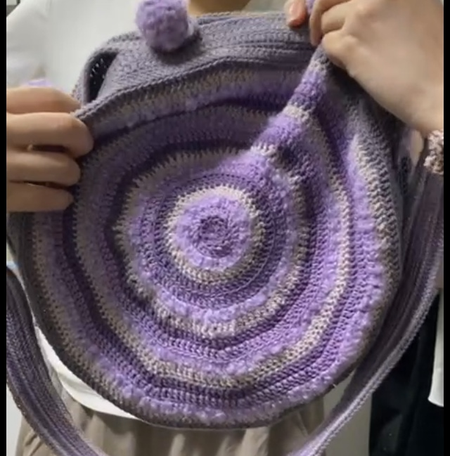
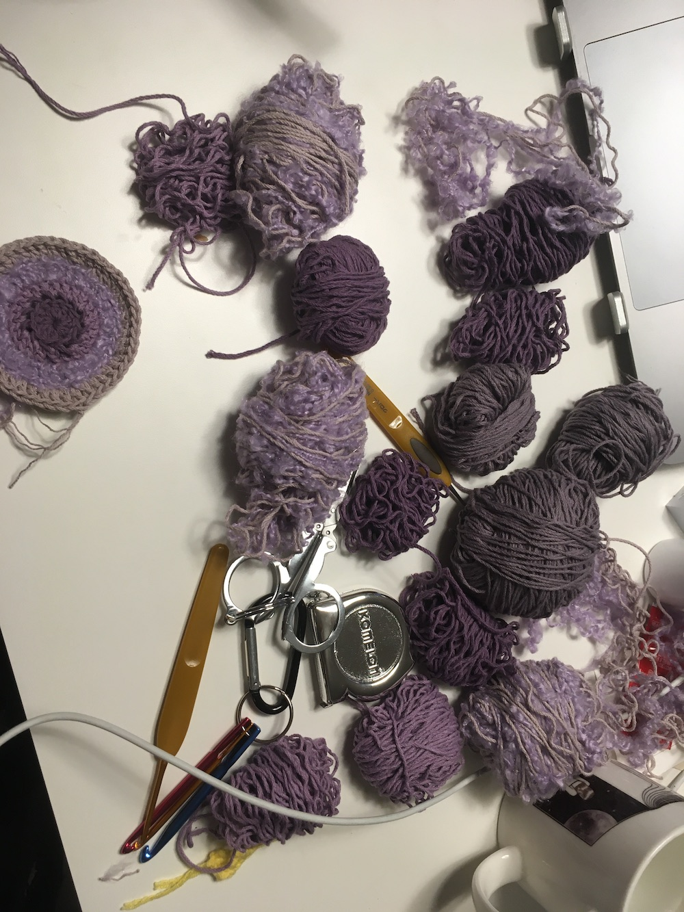
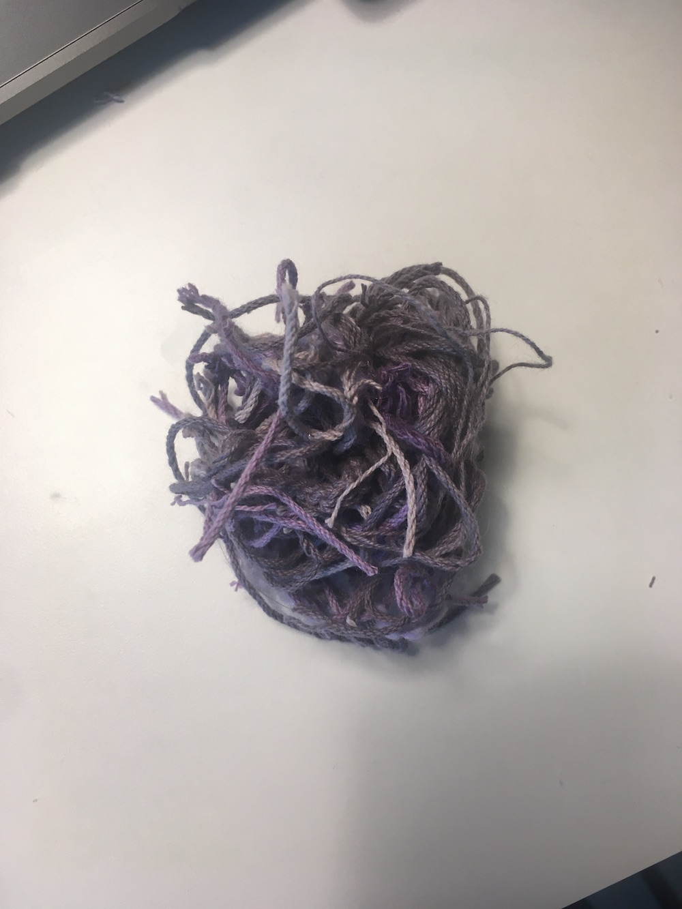
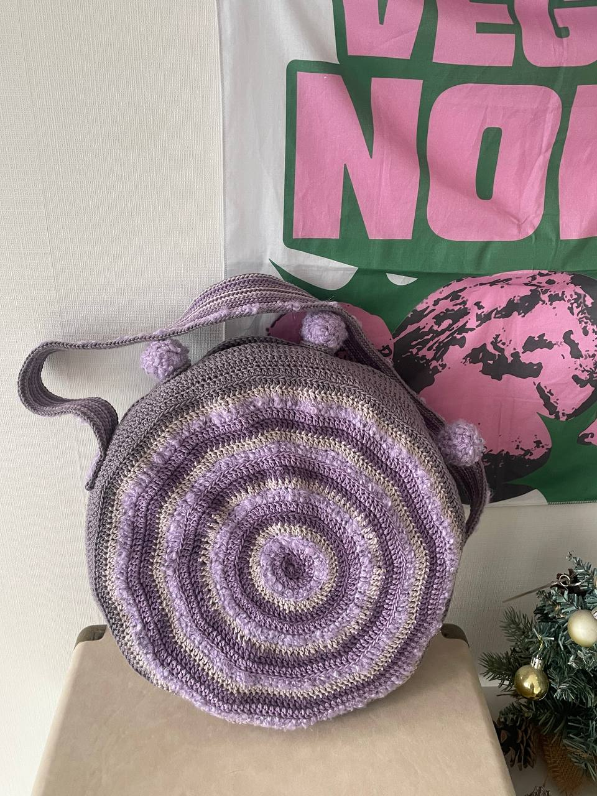

조금 속상하게도 집에서 4호 코바늘을 잃어버린 것 같다. 아 속상하네. 벌써 두 번째 산 건데.. 왜 자꾸 집에서 물건이 사라지는 걸까. 물론 찾아보면 있겠지만 그래 집 청소를 좀 꼼꼼히 해야 겠다.
가방끈을 만들고 있다. 5호로 시작해서 빡빡해져서 3호로 바꿔서 뜨다 보니 쪼그라들었고 또 실 색을 바꾸다 보니 또 이상하게 계속 쪼그라들어서.. 사다리꼴 모양이 되어버렸다. 하지만 굴하지 않고~ 원하는 너비 만큼 일단 떴다.
소고채를 보관할 공간을 따로 계산하지 못했기 때문에 가방끈에 채를 보관할 수 있도록 하려 한다. 괜찮을지 자신이 없지만.. 일단 떠봐야 할 것 같다. 생각보다 가방끈 뜨는 게 좀 빡쎘다. 탄탄하고 늘어짐 없는 방식으로 해야 해서 무한 빼뜨기를 하고 있다.
-
우와 진짜 내가 해냄 그리고 주인을 찾아감
4호 코바늘은 잃어버리지 않았고, 가방끈에 채를 보관할 수 있도록 하지 못했다, 원형가방 본체 뒷면에 채 보관 공간을 둘까 했는데 끈이 짧아서 숄더백이 되었으므로.. 그 계획도 철회했다. 왕방울 3개로 여밀 수 있도록 마무리했다. 꽤 긴 시간이었지만 소고가방이 완성되었다. 본드의 도움도 많이 받았고 좀 꼬질이 상태로 준 것이 마음에 걸리지만 세탁을 할 용기가 나지 않았다..
코마사 실도 좋은 선택이었고 보라색으로 적당히 톤온톤 색감도 뜨고 보니 나름 괜찮게 보인다.
한번 실패했을 때 실패 원인으로 추정한 것은, 일반 면실과 부클실을 합사해서 떴는데 합사를 하면 실이 두꺼워지는 게 당연한 것인데 그걸 고려하지 않았던 것이다. 실을 풀면서 무늬를 살펴보니 합사한 부분이 다른 실로 뜬 부분과 코의 높이 차이가 나는 것을 발견했다. 이유를 알았으니 다행이다. 다음부터는 그런 실수는 하지 않으리.. 그리고 부클실이 단독으로 쓰면 너무 불안정할까봐 합사를 한 것도 있는데 생각보다는 그렇지 않아서 단독으로도 꽤 괜찮은 실이라는 인상을 받았다. 이것도 기억해두리..
 소창끈 부분을 고려해서 여밈부분을 완전히 원통형으로 두지 않고 나름 약간의 여유 공간을 두었는데 생각한 것처럼 잘 구현이 되었는지는 모르겠다. 내 소고는 소창끈이 아니라 명주실타래 같은 끈이라.. 하지만 뭐 완성에 의의를 두며
아 해방감 아주 좋군..
+
주인친구로부터 사진도 전해받았다.
